# one Gillespie step: advance by a single reaction event
gillespie_step <- function(t, Xs, propensity, stoichiometry, ...) {
p_all <- propensity(Xs, ...); p_sum <- sum(p_all)
if (abs(p_sum) < 1e-9) return(list(t = t, Xs = Xs, if_stop = TRUE)) # no reaction possible
dt <- rexp(1, rate = p_sum) # waiting time to next event
event <- sample(length(p_all), 1, prob = p_all) # which reaction fires
list(t = t + dt, Xs = Xs + stoichiometry(event, ...), if_stop = FALSE)
}
# full stochastic simulation up to tmax or iter_max events
ssa <- function(propensity, stoichiometry, X0, tmax, iter_max, ...) {
Xs <- X0; n <- length(Xs)
t_all <- numeric(iter_max); X_all <- matrix(0, iter_max, n)
t_all[1] <- 0; X_all[1, ] <- Xs
t <- 0; iter <- 1
while (t < tmax && iter < iter_max) {
out <- gillespie_step(t, Xs, propensity, stoichiometry, ...)
if (out$if_stop) break
iter <- iter + 1; t <- out$t; Xs <- out$Xs
t_all[iter] <- t; X_all[iter, ] <- Xs
}
cbind(t_all[1:iter], X_all[1:iter, , drop = FALSE])
}8D. Gillespie algorithm
The stochastic differential equations of Part 6 add continuous noise to a deterministic rate equation. For a chemical reaction network with small molecule numbers, a different and more fundamental description is often needed: the molecules are discrete and react one event at a time. The Gillespie algorithm (Gillespie 1976, 1977), also called the stochastic simulation algorithm (SSA), generates exact sample trajectories of such a network from its chemical master equation.
We describe the system by a state vector \(\mathbf{S}\) holding the number of molecules of each species. Each reaction \(j\) converts reactants into products,
\[ \sum_i \alpha_{ij} S_i \rightarrow \sum_i \beta_{ij} S_i , \]
and changes the state by its stoichiometry vector \(\boldsymbol{\gamma}_j\), the \(j\)-th column of the stoichiometry matrix with entries \(\Gamma_{ij} = \beta_{ij} - \alpha_{ij}\). Each reaction has a propensity \(R_j\), the probability per unit time that it fires, given by the law of mass action times a combinatorial degeneracy factor (Gillespie 1992),
\[ R_j = k_j \prod_{i} \binom{S_i}{\alpha_{ij}} \approx k_j \prod_i S_i^{\alpha_{ij}} , \]
where the binomial factor counts the distinct ways of choosing the reactant molecules (for example, \(S(S-1)/2\) ways to pick two of \(S\) identical molecules).
8D.1 The algorithm
Given the propensities, each Gillespie step advances the system by one reaction event:
- compute all propensities \(R_j(\mathbf{S})\);
- draw the waiting time \(\tau\) to the next event from an exponential distribution with rate \(R_\text{tot} = \sum_j R_j\);
- pick which reaction fires, choosing reaction \(j\) with probability \(R_j / R_\text{tot}\);
- advance time \(t \rightarrow t + \tau\) and update the state \(\mathbf{S} \rightarrow \mathbf{S} + \boldsymbol{\gamma}_j\).
Repeating until a stopping time gives one exact realization. The generic driver below takes user-supplied propensity and stoichiometry functions, so the same code runs any reaction network.
NoteRecipe 8D.1.1
Objective. Build a Gillespie stochastic simulation for a general chemical reaction network.
Model. A generic reaction network: a state vector of molecule counts, each reaction j with a propensity R_j and a stoichiometry vector gamma_j that updates the state.
Method. The Gillespie stochastic simulation algorithm (the direct method): compute all propensities, draw a waiting time from an exponential with rate equal to their sum, pick reaction j with probability R_j/R_tot, then advance time and update the state.
Test. A generic driver taking user-supplied propensity and stoichiometry functions, with stop conditions tmax and a maximum iteration count.
Show. A time-and-state trajectory for a reaction network (exercised in 8D.2).
Verification. The routine generates exact sample trajectories of a reaction network from its master equation.
R implementation
Python implementation
import numpy as np
import matplotlib.pyplot as plt
# one Gillespie step: advance by a single reaction event
def gillespie_step(t, Xs, propensity, stoichiometry, **kw):
p_all = propensity(Xs, **kw); p_sum = np.sum(p_all)
if abs(p_sum) < 1e-9:
return {"t": t, "Xs": Xs, "if_stop": True} # no reaction possible
dt = np.random.exponential(1 / p_sum) # waiting time to next event
event = np.random.choice(len(p_all), p=p_all / p_sum) # which reaction fires
return {"t": t + dt, "Xs": Xs + stoichiometry(event, **kw), "if_stop": False}
# full stochastic simulation up to tmax or iter_max events
def ssa(propensity, stoichiometry, X0, tmax, iter_max, **kw):
Xs = np.array(X0); n = len(Xs)
t_all = np.zeros(iter_max); X_all = np.zeros((iter_max, n))
t_all[0] = 0; X_all[0] = Xs
t = 0; it = 0
while t < tmax and it < iter_max - 1:
out = gillespie_step(t, Xs, propensity, stoichiometry, **kw)
if out["if_stop"]:
break
it += 1; t = out["t"]; Xs = out["Xs"]
t_all[it] = t; X_all[it] = Xs
return np.column_stack((t_all[:it + 1], X_all[:it + 1]))8D.2 A constitutively transcribed gene
The simplest example is a gene produced at a constant rate \(g\) and degraded at rate \(k\), a birth-death process,
\[ 0 \xrightarrow{g} x \xrightarrow{k} 0 , \]
whose deterministic rate equation \(dx/dt = g - kx\) has steady state \(\bar{x} = g/k\). We specify the network with two functions: the propensities \((g,\, kx)\) and the stoichiometry (\(+1\) for production, \(-1\) for degradation).
NoteRecipe 8D.2.1
Objective. Simulate a constitutively transcribed gene with Gillespie and measure its intrinsic noise.
Model. A birth-death process 0 -> x at rate g and x -> 0 at rate k*x, with deterministic steady state x_bar = g/k.
Method. The Gillespie stochastic simulation algorithm, with time-weighted mean and standard deviation.
Test. k = 0.1, production g = 100, 10, 1 (steady states 1000, 100, 10), tmax = 100; started at the steady state and separately from zero; seed 101.
Show. Trajectories of the molecule count for each g, and the standard deviation versus mean against sqrt(x_bar).
Verification. The standard deviation grows with the mean and relative noise falls as roughly 1/sqrt(x_bar) (the Poisson scaling), though at this finite run length the measured SD sits below sqrt(x_bar) because a single trajectory undersamples the fluctuations; from zero the trajectories climb along x_bar*(1 - exp(-k*t)).
R implementation
p_func1 <- function(Xs, g, k) c(g, k * Xs[1]) # propensities: birth, death
s_func1 <- function(r_ind, g, k) cbind(c(1), c(-1))[, r_ind] # +1 or -1# stochastic dynamics started at the deterministic steady state, three copy numbers
par(mfrow = c(1, 3), mar = c(4, 4, 2, 1))
k <- 0.1
for (g in c(100, 10, 1)) {
set.seed(101)
xbar <- g / k
res <- ssa(p_func1, s_func1, c(xbar), tmax = 100, iter_max = 20000, g = g, k = k)
plot(res[, 1], res[, 2], type = "s", col = 2, xlab = "Time", ylab = "x",
main = bquote(bar(x) == .(xbar)), ylim = c(xbar * 0.8, xbar * 1.2))
abline(h = xbar, col = 3)
}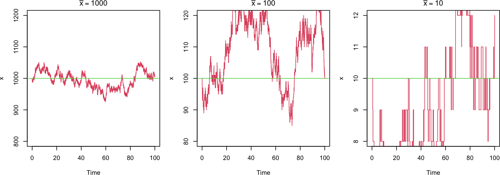
Python implementation
def p_func1(Xs, g, k):
return np.array([g, k * Xs[0]]) # propensities: birth, death
def s_func1(r_ind, g, k):
return np.array([[1], [-1]])[r_ind] # +1 or -1# stochastic dynamics started at the deterministic steady state, three copy numbers
fig, axs = plt.subplots(1, 3, figsize=(9, 3.2))
k = 0.1
for ax, g in zip(axs, (100, 10, 1)):
np.random.seed(101)
xbar = g / k
res = ssa(p_func1, s_func1, [xbar], tmax=100, iter_max=20000, g=g, k=k)
ax.step(res[:, 0], res[:, 1], color="red")
ax.axhline(xbar, color="green")
ax.set(xlabel="Time", ylabel="x", title=f"x̄ = {xbar:.0f}", ylim=(xbar * 0.8, xbar * 1.2))
plt.tight_layout(); plt.show()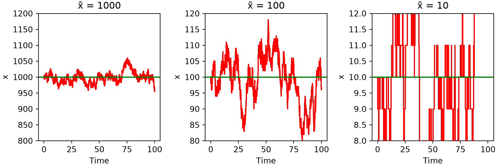
The fluctuations around the steady state grow in absolute size but shrink in relative size as the copy number increases: a striking feature of intrinsic noise. To quantify it we compute the time-weighted mean and standard deviation, weighting each state by how long the system dwells there (the waiting times \(\Delta t_i\) are not constant, so plain averaging would be wrong):
\[ \langle x \rangle = \frac{\sum_i x_i\, \Delta t_i}{\sum_i \Delta t_i} , \qquad \text{SD}(x) = \sqrt{\langle x^2 \rangle - \langle x \rangle^2} . \]
R implementation
# time-weighted mean, SD, and relative error of each species
cal_stat <- function(mat) {
mat <- na.omit(mat); nt <- nrow(mat); nx <- ncol(mat)
dt <- mat[-1, 1] - mat[-nt, 1]; t_tot <- sum(dt)
mean <- t(mat[-nt, 2:nx, drop = FALSE]) %*% dt / t_tot
mean2 <- t(mat[-nt, 2:nx, drop = FALSE]^2) %*% dt / t_tot
sd <- sqrt(mean2 - mean^2)
list(mean = mean, sd = sd, error = sd / mean)
}k <- 0.1; ss_all <- c(1000, 100, 10)
stats <- lapply(c(100, 10, 1), function(g) {
set.seed(101)
cal_stat(ssa(p_func1, s_func1, c(g / k), 100, 20000, g = g, k = k))
})
sd_all <- sapply(stats, function(s) s$sd)
error_all <- sapply(stats, function(s) s$error)
par(mfrow = c(1, 2), mar = c(4, 4, 2, 1))
plot(ss_all, sd_all, type = "b", col = 2, xlab = "Steady-state x", ylab = "SD",
xlim = c(0, 1000), ylim = c(0, 35))
curve(sqrt(x), add = TRUE, col = 3)
legend("topleft", c("Simulation", "sqrt(x)"), col = c(2, 3), lty = 1, cex = 0.8)
plot(ss_all, error_all, type = "b", col = 2, xlab = "Steady-state x",
ylab = "SD / Mean", xlim = c(0, 1000), ylim = c(0, 0.4))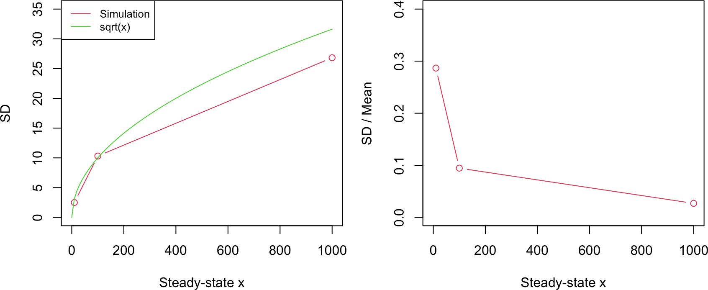
Python implementation
# time-weighted mean, SD, and relative error of each species
def cal_stat(mat):
mat = mat[~np.isnan(mat).any(axis=1)]; nt = mat.shape[0]
dt = mat[1:, 0] - mat[:-1, 0]; t_tot = np.sum(dt)
mean = mat[:-1, 1:].T @ dt / t_tot
mean2 = (mat[:-1, 1:]**2).T @ dt / t_tot
sd = np.sqrt(mean2 - mean**2)
return {"mean": mean, "sd": sd, "error": sd / mean}k = 0.1; ss_all = np.array([1000, 100, 10])
stats = []
for g in (100, 10, 1):
np.random.seed(101)
stats.append(cal_stat(ssa(p_func1, s_func1, [g / k], 100, 20000, g=g, k=k)))
sd_all = np.array([s["sd"][0] for s in stats])
error_all = np.array([s["error"][0] for s in stats])
fig, axs = plt.subplots(1, 2, figsize=(9, 4))
xx = np.arange(1, 1001)
axs[0].plot(ss_all, sd_all, "o-", color="red")
axs[0].plot(xx, np.sqrt(xx), color="green", label="sqrt(x)")
axs[0].set(xlabel="Steady-state x", ylabel="SD", xlim=(0, 1000), ylim=(0, 35)); axs[0].legend()
axs[1].plot(ss_all, error_all, "o-", color="red")
axs[1].set(xlabel="Steady-state x", ylabel="SD / Mean", xlim=(0, 1000), ylim=(0, 0.4))
plt.tight_layout(); plt.show()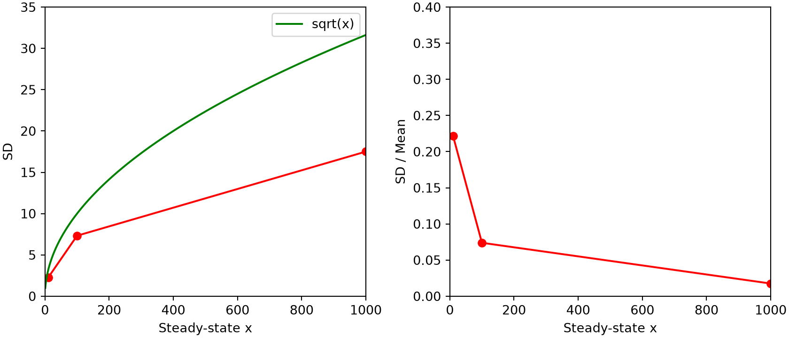
The standard deviation follows \(\text{SD}(x) = \sqrt{\bar{x}}\), the Poisson result for a birth-death process, so the relative noise \(\text{SD}/\text{mean} = 1/\sqrt{\bar{x}}\) falls as the copy number rises. This is why low-abundance species are intrinsically noisier. Starting instead from \(x = 0\), the trajectories climb toward the steady state along the deterministic curve \(\bar{x}(1 - e^{-kt})\), with fluctuations that again shrink in relative terms at higher copy number.
R implementation
# growth from zero toward the steady state
par(mfrow = c(1, 3), mar = c(4, 4, 2, 1))
k <- 0.1
for (g in c(100, 10, 1)) {
set.seed(101)
res <- ssa(p_func1, s_func1, c(0), tmax = 100, iter_max = 20000, g = g, k = k)
plot(res[, 1], res[, 2], type = "s", col = 2, xlab = "Time", ylab = "x",
main = bquote(bar(x) == .(g / k)), ylim = c(0, 1.2 * g / k))
lines(res[, 1], g / k * (1 - exp(-k * res[, 1])), col = 3)
}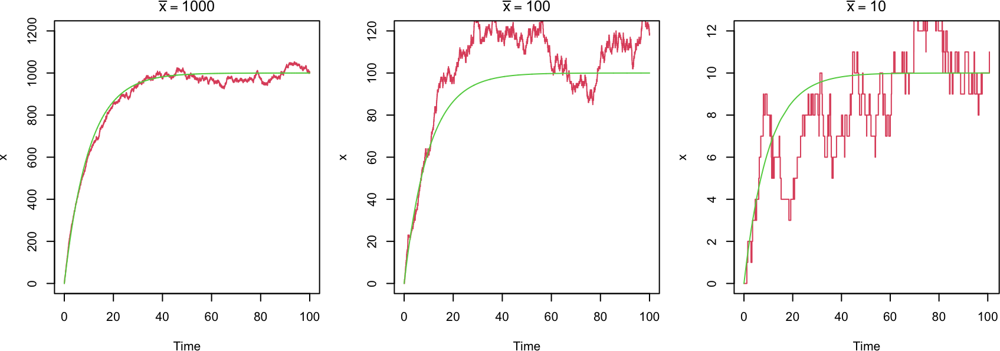
Python implementation
# growth from zero toward the steady state
fig, axs = plt.subplots(1, 3, figsize=(9, 3.2))
k = 0.1
for ax, g in zip(axs, (100, 10, 1)):
np.random.seed(101)
res = ssa(p_func1, s_func1, [0], tmax=100, iter_max=20000, g=g, k=k)
ax.step(res[:, 0], res[:, 1], color="red")
ax.plot(res[:, 0], g / k * (1 - np.exp(-k * res[:, 0])), color="green")
ax.set(xlabel="Time", ylabel="x", title=f"x̄ = {g / k:.0f}", ylim=(0, 1.2 * g / k))
plt.tight_layout(); plt.show()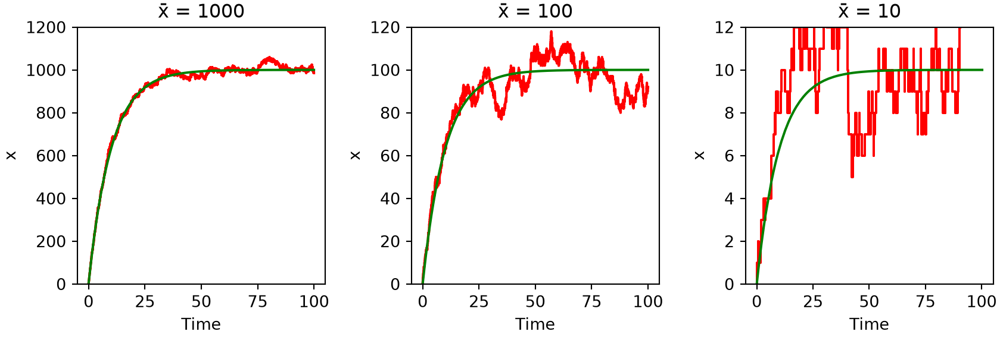
8D.3 Bursting transcription
Genes often produce proteins in bursts: a promoter fires occasionally but releases several molecules each time. We model this by making each production event add \(n\) molecules at rate \(g/n\), so the mean production rate \(g\) (and the deterministic steady state \(\bar{x} = g/k\)) stay fixed as \(n\) varies,
\[ 0 \xrightarrow{g/n} n\,x , \qquad x \xrightarrow{k} 0 . \]
NoteRecipe 8D.3.1
Objective. Show that transcriptional bursting adds noise beyond the Poisson floor.
Model. A bursting birth-death process 0 -> n*x at rate g/n and x -> 0 at rate k*x, so each event adds n molecules while the mean production rate g stays fixed.
Method. The Gillespie stochastic simulation algorithm, varying the burst size at fixed mean rate.
Test. g = 16, k = 0.1 (steady state 160), burst sizes n = 1, 2, 4, 8, started at steady state, tmax = 2000; seed 91.
Show. Trajectories for each burst size n, and the mean and standard deviation versus n.
Verification. The mean stays at 160 for every n, but the standard deviation grows with burst size, so larger rarer bursts inject more noise than single-molecule events.
R implementation
p_func2 <- function(Xs, g, k, n) c(g / n, k * Xs[1]) # burst production, degradation
s_func2 <- function(r_ind, g, k, n) cbind(c(n), c(-1))[, r_ind] # +n or -1# larger bursts (bigger n) at the same mean level
par(mfrow = c(2, 2), mar = c(4, 4, 2, 1))
g <- 16; k <- 0.1
res_burst <- list()
for (n in c(1, 2, 4, 8)) {
set.seed(91)
res <- ssa(p_func2, s_func2, c(160), tmax = 2000, iter_max = 500000, g = g, k = k, n = n)
res_burst[[as.character(n)]] <- res
plot(res[, 1], res[, 2], type = "s", col = 2, xlab = "Time", ylab = "x",
main = paste("n =", n), ylim = c(100, 220))
abline(h = 160, col = 3)
}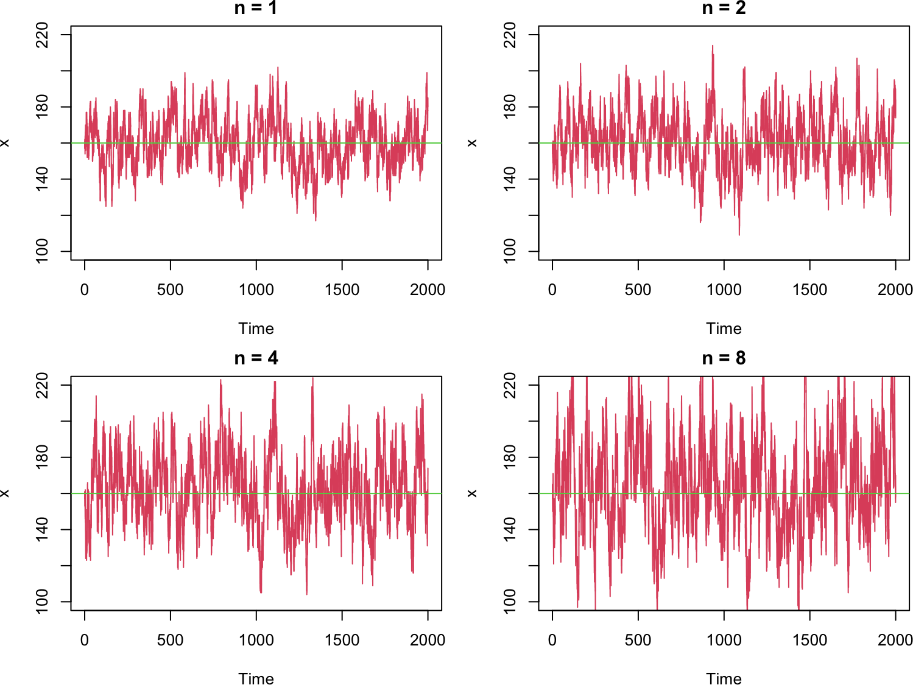
# mean stays fixed, noise grows with burst size
n_all <- c(1, 2, 4, 8)
stats_b <- lapply(res_burst, cal_stat)
par(mfrow = c(1, 2), mar = c(4, 4, 2, 1))
plot(n_all, sapply(stats_b, function(s) s$mean), type = "b", col = 2,
xlab = "n", ylab = "Mean", xlim = c(0, 8), ylim = c(0, 200))
plot(n_all, sapply(stats_b, function(s) s$sd), type = "b", col = 2,
xlab = "n", ylab = "SD", xlim = c(0, 8), ylim = c(0, 35))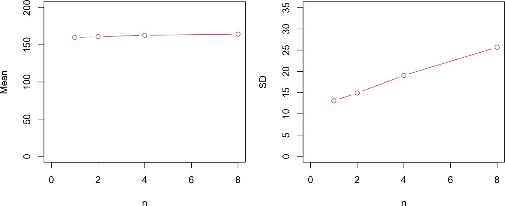
Python implementation
def p_func2(Xs, g, k, n):
return np.array([g / n, k * Xs[0]]) # burst production, degradation
def s_func2(r_ind, g, k, n):
return np.array([[n], [-1]])[r_ind] # +n or -1# larger bursts (bigger n) at the same mean level
fig, axs = plt.subplots(2, 2, figsize=(8, 6))
g = 16; k = 0.1
res_burst = {}
for ax, n in zip(axs.flat, (1, 2, 4, 8)):
np.random.seed(91)
res = ssa(p_func2, s_func2, [160], tmax=2000, iter_max=500000, g=g, k=k, n=n)
res_burst[n] = res
ax.step(res[:, 0], res[:, 1], color="red")
ax.axhline(160, color="green")
ax.set(xlabel="Time", ylabel="x", title=f"n = {n}", ylim=(100, 220))
plt.tight_layout(); plt.show()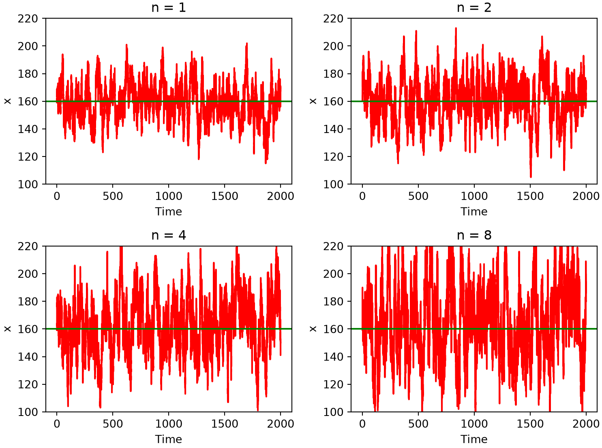
# mean stays fixed, noise grows with burst size
n_all = [1, 2, 4, 8]
stats_b = [cal_stat(res_burst[n]) for n in n_all]
fig, axs = plt.subplots(1, 2, figsize=(9, 4))
axs[0].plot(n_all, [s["mean"][0] for s in stats_b], "o-", color="red")
axs[0].set(xlabel="n", ylabel="Mean", xlim=(0, 8), ylim=(0, 200))
axs[1].plot(n_all, [s["sd"][0] for s in stats_b], "o-", color="red")
axs[1].set(xlabel="n", ylabel="SD", xlim=(0, 8), ylim=(0, 35))
plt.tight_layout(); plt.show()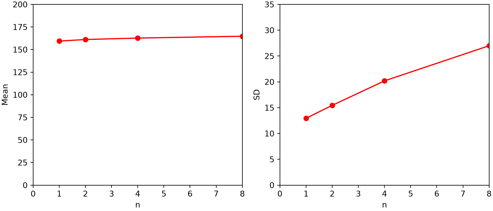
The mean stays at 160 regardless of \(n\), but the standard deviation grows with the burst size: larger, rarer bursts inject more noise than frequent single-molecule events, even at the same average production rate. Transcriptional bursting is thus a source of gene-expression noise beyond the Poisson floor of the simple birth-death process.
8D.4 A self-inhibiting gene
Finally we model a gene that represses itself. The promoter has an unbound state \(D\) and a bound state \(C\); two molecules of \(M\) can bind the promoter (a dimer), switching it from \(D\) to \(C\). Production is faster from the unbound promoter (\(g_0 > g_1\)), so accumulating \(M\) shuts down its own production. The five reactions are production from each promoter state, degradation of \(M\), and binding/unbinding:
\[ \begin{aligned} D &\xrightarrow{g_0} D + M , & M &\xrightarrow{k} 0 , & 2M + D &\xrightarrow{k_\text{on}} C , \\ C &\xrightarrow{k_\text{off}} 2M + D , & C &\xrightarrow{g_1} C + M . && \end{aligned} \]
The binding propensity carries the degeneracy factor \(M(M-1)/2\) for choosing two of the \(M\) molecules, and the effective dissociation constant is \(K = \sqrt{2 k_\text{off} / k_\text{on}}\). We omit the promoter-occupancy traces and focus on the \(M\) dynamics.
NoteRecipe 8D.4.1
Objective. Show that negative autoregulation suppresses gene-expression noise.
Model. A self-repressing gene with promoter states (unbound D, bound C) and molecules M: production from D at rate g0 and from C at the slower g1, degradation M -> 0 at rate k, and dimer binding/unbinding 2M + D <-> C at rates kon, koff.
Method. The Gillespie stochastic simulation algorithm for a gene circuit with promoter binding.
Test. k = 0.1 throughout; self-inhibition (g0 = 55, g1 = 5, kon = 0.002, koff = 90), no feedback (g0 = g1 = 30), and low copy number (g0 = 5.5, g1 = 0.5, kon = 0.2, koff = 90); seed 101.
Show. Trajectories of the molecule count for each regime, with the mean and standard deviation.
Verification. The self-inhibiting gene has a lower standard deviation than the no-feedback case, and at low copy number the few-molecule binding makes the dynamics strongly bursty.
R implementation
# state Xs = (D, C, M): D unbound promoter, C bound promoter, M molecules
p_func3 <- function(Xs, g0, g1, k, kon, koff) {
d <- Xs[1]; c <- Xs[2]; m <- Xs[3]
c(g0 * d, k * m, kon * d * m * (m - 1) / 2, koff * c, g1 * c)
}
s_func3 <- function(r_ind, g0, g1, k, kon, koff) {
cbind(c(0, 0, 1), # production from D: M + 1
c(0, 0, -1), # degradation: M - 1
c(-1, 1, -2), # binding: D - 1, C + 1, M - 2
c(1, -1, 2), # unbinding: D + 1, C - 1, M + 2
c(0, 0, 1))[, r_ind] # production from C: M + 1
}# three regimes: self-inhibition (high copy), no feedback, self-inhibition (low copy)
runs <- list(
list(main = "self-inhibition", g0 = 55, g1 = 5, kon = 0.002, koff = 90, X0 = c(1, 0, 300), tmax = 400, ymax = 600),
list(main = "no feedback", g0 = 30, g1 = 30, kon = 0, koff = 0, X0 = c(1, 0, 300), tmax = 300, ymax = 600),
list(main = "low copy number", g0 = 5.5, g1 = 0.5, kon = 0.2, koff = 90, X0 = c(1, 0, 30), tmax = 300, ymax = 60)
)
par(mfrow = c(1, 3), mar = c(4, 4, 2, 1))
stats_si <- list()
for (r in runs) {
set.seed(101)
res <- ssa(p_func3, s_func3, r$X0, r$tmax, 50000, g0 = r$g0, g1 = r$g1, k = 0.1, kon = r$kon, koff = r$koff)
stats_si[[r$main]] <- cal_stat(res)
plot(res[, 1], res[, 4], type = "s", col = 2, xlab = "Time", ylab = "M",
main = r$main, xlim = c(0, r$tmax), ylim = c(0, r$ymax))
}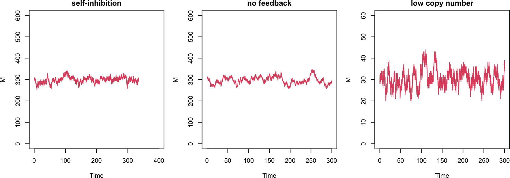
# mean and SD of M in each regime
sapply(stats_si, function(s) c(mean_M = s$mean[3], sd_M = s$sd[3])) self-inhibition no feedback low copy number
mean_M 297.92632 296.48158 30.341959
sd_M 13.62181 16.54486 3.967586Python implementation
# state Xs = (D, C, M): D unbound promoter, C bound promoter, M molecules
def p_func3(Xs, g0, g1, k, kon, koff):
d, c, m = Xs
return np.array([g0 * d, k * m, kon * d * m * (m - 1) / 2, koff * c, g1 * c])
def s_func3(r_ind, g0, g1, k, kon, koff):
S = np.array([[0, 0, 1], # production from D: M + 1
[0, 0, -1], # degradation: M - 1
[-1, 1, -2], # binding: D - 1, C + 1, M - 2
[1, -1, 2], # unbinding: D + 1, C - 1, M + 2
[0, 0, 1]]) # production from C: M + 1
return S[r_ind]# three regimes: self-inhibition (high copy), no feedback, self-inhibition (low copy)
runs = [
dict(main="self-inhibition", g0=55, g1=5, kon=0.002, koff=90, X0=[1, 0, 300], tmax=400, ymax=600),
dict(main="no feedback", g0=30, g1=30, kon=0, koff=0, X0=[1, 0, 300], tmax=300, ymax=600),
dict(main="low copy number", g0=5.5, g1=0.5, kon=0.2, koff=90, X0=[1, 0, 30], tmax=300, ymax=60),
]
fig, axs = plt.subplots(1, 3, figsize=(9, 3.2))
stats_si = {}
for ax, r in zip(axs, runs):
np.random.seed(101)
res = ssa(p_func3, s_func3, r["X0"], r["tmax"], 50000,
g0=r["g0"], g1=r["g1"], k=0.1, kon=r["kon"], koff=r["koff"])
stats_si[r["main"]] = cal_stat(res)
ax.step(res[:, 0], res[:, 3], color="red")
ax.set(xlabel="Time", ylabel="M", title=r["main"], xlim=(0, r["tmax"]), ylim=(0, r["ymax"]))
plt.tight_layout(); plt.show()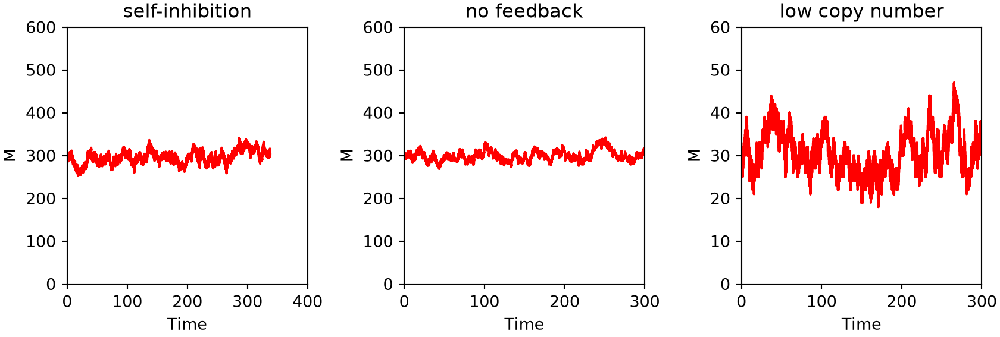
# mean and SD of M in each regime
for name, s in stats_si.items():
print(name, "mean_M =", round(s["mean"][2], 1), "sd_M =", round(s["sd"][2], 1))self-inhibition mean_M = 295.6 sd_M = 15.2
no feedback mean_M = 299.7 sd_M = 12.2
low copy number mean_M = 30.6 sd_M = 4.8The middle panel turns the feedback off (setting \(k_\text{on} = k_\text{off} = 0\) and \(g_0 = g_1\) so the mean \(M\) is unchanged), reducing the circuit to a constitutively expressed gene. Comparing it with the self-inhibiting case on the left, the self-inhibiting gene has a lower standard deviation: negative autoregulation suppresses gene-expression noise, a result established both theoretically and experimentally (Becskei and Serrano 2000). At low copy number (right panel), the binding and unbinding of just a few molecules make the dynamics strongly bursty, resembling noisy oscillations.